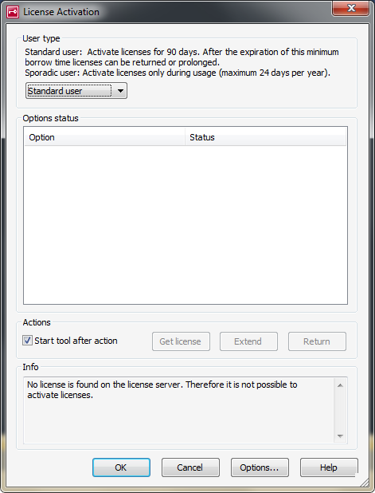

Contents:
CANdelaStudio supports several license types, due to historical reasons.
The Vector License available since CANdelaStudio 9.1 is the current mechanism.
(also called "Legacy License")
A Legacy License uses the older licensing mechanism:
There are three possible ways to get such a local license:
LicenseInjector.exe and an adequate ASR file. This way is still used by some customers and for the preparation of training computers.CANdelaStudio supports license check-out from an installed Vector network iterface (e.g. CANcase) since version 8.0 SP2, for interfaces that support more than 128 license bits:
Supported (CDS-30409 8.0 SP2):
Not supported:
In this case, a second parameter "PoolLicenseEdition" chooses a concrete edition to start.
| Parameter Name | Valid Values | Description |
|---|---|---|
| LicenseType | Per Seat | Local licenses shall be used (USB, HW, local Flexnet). Default value. |
| Pool | Pool licenses shall be used. The customer has to run a local license server. The parameter "PoolLicenseEdition" chooses a concrete edition to start. |
|
| Education License | ||
| Student License | ||
| Education Campus License | ||
| For LicenseType "Pool": | ||
| PoolLicenseEdition | CANdelaStudio Admin | Edition to be used (no default value) |
| CANdelaStudio Pro | ||
| CANdelaStudio Standard | ||
| CANdelaStudio ViewX | ||
| CANdelaStudio View |
In practice IT department of the customer switches all users to pool licensing and enforces the usage of a concrete edition by setting these parameters (e.g. during rollout).

CANdelaStudio Pool License Activation Dialog
If pool licensing is switched on, the user has to checkout his pool license the first time he starts CANdelaStudio. Using the Activation Dialog shown at start-up, the user can check out a "standard" license (and he will keep this license for 3 month) or a "sporadic" license that is only claimed during the time of usage.
Note: DDM since R21 does not accept a FlexNET Pool license, see [DEXT-R030-HardwarePool].
In version 8.0, 8.1 and 8.2, CANdelaStudio checked for Vector Hardware licenses of main versions of the following products (CDS-25244 8.0, CDS-40007 8.5):
It also checked for "old" Vector USB dongle licenses for an installed CANoe, CANape or CANdito (CDS-30942, 8.0 SP2).
It checked for Keyman dongle license of
If one of these products was licensed via hardware, CANdelaStudio ran as a View Edition ("Bundle View").
Note: CANdelaStudio shows the edition info in Ribbon Tab File | Product Information, section "About", see [MENU-R1270].
In 2017, Vector reworked the licensing terms and conditions and the licensing types:
The Vector Licensing Portal helps to...
On the local computer, the Vector License Client [IBP-R040] manages the licenses.
For details, please contact the Vector Sales team.
[LIC-R600] CANdelaStudio always checks Vector Licenses in addition to Software/Hardware Based Licenses (there is no configuration switch).
For a list of hardware supported for Vector Licenses, see the article Hardware Compatibility With New Vector License Model in the Vector Knowledge Base (link as of 2018-11).
Use-case:
Solution:
Starts CANdelaStudio in a "lower" edition than the currently licensed one, see [CLI-R100-edition].
Note: The comand line switches /ignoreDongle and /ignoreFlexNet are no longer available (CDS-32094, 8.5). They have been replaced by CANdelaStudio.ini parameters:
R115.0: INI file switches to disable a specific license type
In the CANdelaStudio.ini file in Section "General", parameters allow disabling the check of a specific license type.
From 6.0 SP1 up to before 8.2, CANdelaStudio worked for 2 days without product activation, beginning at first CANdelaStudio start. This was called the "grace period". It allowed instant use of CANdelaStudio after installation. It had no impact on server license versions. (CDS-11342, CDS-29069)
The CANdelaStudio delivery contains ODXStudio as bundled product, and vice versa. The bundled product runs as a View edition (but you can license it separately for a higher edition).
See also Installation Blocking [CDSMSI-R001].
When run without a license, CANdelaStudio starts as View edition (CDS-40007 8.5). This holds independent of...
See Editions.
For a Vector License:
Other license types do not permit use via remote desktop.
For a Vector License: